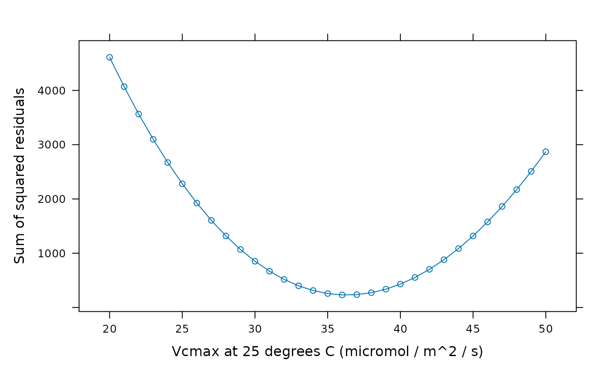

Generate an error function for C4 A-Ci curve fitting
error_function_c4_aci.RdCreates a function that returns an error value (the negative of the natural
logarithm of the likelihood) representing the amount of agreement between
modeled and measured An values.
Usage
error_function_c4_aci(
replicate_exdf,
fit_options = list(),
sd_A = 1,
absorptance = 0.85,
f_spectral = 0.15,
rho = 0.5,
theta = 0.7,
x_etr = 0.4,
ao_column_name = 'ao',
a_column_name = 'A',
gamma_star_column_name = 'gamma_star',
jmax_norm_column_name = 'Jmax_norm',
kc_column_name = 'Kc',
ko_column_name = 'Ko',
kp_column_name = 'Kp',
oxygen_column_name = 'oxygen',
pcm_column_name = 'PCm',
qin_column_name = 'Qin',
rd_norm_column_name = 'Rd_norm',
total_pressure_column_name = 'total_pressure',
vcmax_norm_column_name = 'Vcmax_norm',
vpmax_norm_column_name = 'Vpmax_norm'
)Arguments
- replicate_exdf
An
exdfobject representing one CO2 response curve.- fit_options
A list of named elements representing fit options to use for each parameter. Values supplied here override the default values (see details below). Each element must be
'fit','column', or a numeric value. A value of'fit'means that the parameter will be fit; a value of'column'means that the value of the parameter will be taken from a column inreplicate_exdfof the same name; and a numeric value means that the parameter will be set to that value. For example,fit_options = list(Rd_at_25 = 0, Vcmax_at_25 = 'fit', Vpmax_at_25 = 'column')means thatRd_at_25will be set to 0,Vcmax_at_25will be fit, andVpmax_at_25will be set to the values in theVpmax_at_25column ofreplicate_exdf.- sd_A
The standard deviation of the measured values of the net CO2 assimilation rate, expressed in units of
micromol m^(-2) s^(-1). Ifsd_Ais not a number, then there must be a column inexdf_objcalledsd_Awith appropriate units. A numeric value supplied here will overwrite the values in thesd_Acolumn ofexdf_objif it exists.- absorptance
The leaf absorptance (dimensionless). See Equation 35 from S. von Caemmerer (2021).
- f_spectral
The spectral quality adjustment factor (dimensionless). See Equation 35 from S. von Caemmerer (2021).
- rho
The fraction of light absorbed by photosystem II rather than photosystem I (dimensionless). See Equation 35 from S. von Caemmerer (2021).
- theta
An empirical curvature factor (dimensionless). See Equation 34 from S. von Caemmerer (2021).
- x_etr
The fraction of whole-chain electron transport occurring in the mesophyll (dimensionless). See Equation 29 from S. von Caemmerer (2021).
- ao_column_name
The name of the column in
replicate_exdfthat contains the dimensionless ratio of solubility and diffusivity of O2 to CO2.- a_column_name
The name of the column in
replicate_exdfthat contains the net assimilation inmicromol m^(-2) s^(-1).- gamma_star_column_name
The name of the column in
replicate_exdfthat contains the dimensionlessgamma_starvalues.- jmax_norm_column_name
The name of the column in
exdf_objthat contains the normalizedJmaxvalues (with units ofnormalized to Jmax at its optimal temperature).- kc_column_name
The name of the column in
replicate_exdfthat contains the Michaelis-Menten constant for rubisco carboxylation inmicrobar.- ko_column_name
The name of the column in
replicate_exdfthat contains the Michaelis-Menten constant for rubisco oxygenation inmbar.- kp_column_name
The name of the column in
replicate_exdfthat contains the Michaelis-Menten constant for PEP carboxylase carboxylation inmicrobar.- oxygen_column_name
The name of the column in
exdf_objthat contains the concentration of O2 in the ambient air, expressed as a percentage (commonly 21% or 2%); the units must bepercent.- pcm_column_name
The name of the column in
replicate_exdfthat contains the partial pressure of CO2 in the mesophyll, expressed inmicrobar.- qin_column_name
The name of the column in
exdf_objthat contains values of the incident photosynthetically active flux density inmicromol m^(-2) s^(-1).- rd_norm_column_name
The name of the column in
replicate_exdfthat contains the normalizedRdvalues (with units ofnormalized to Rd at 25 degrees C).- total_pressure_column_name
The name of the column in
exdf_objthat contains the total pressure inbar.- vcmax_norm_column_name
The name of the column in
replicate_exdfthat contains the normalizedVcmaxvalues (with units ofnormalized to Vcmax at 25 degrees C).- vpmax_norm_column_name
The name of the column in
replicate_exdfthat contains the normalizedVpmaxvalues (with units ofnormalized to Vpmax at 25 degrees C).
Details
When fitting A-Ci curves, it is necessary to define a function that calculates
the likelihood of a given set of alpha_psii, gbs,
Jmax_at_opt, Rd_at_25, Rm_frac, Vcmax_at_25,
Vpmax_at_25, and Vpr values by comparing a model prediction to a
measured curve. This function will be passed to an optimization algorithm
which will determine the values that produce the smallest error.
The error_function_c4_aci returns such a function, which is based on a
particular A-Ci curve and a set of fitting options. It is possible to just fit
a subset of the available fitting parameters; by default, the fitting
parameters are Rd_at_25, Vcmax_at_25, and Vpmax_at_25.
This behavior can be changed via the fit_options argument.
For practical reasons, the function actually returns values of -ln(L),
where L is the likelihood. The logarithm of L is simpler to
calculate than L itself, and the minus sign converts the problem from
a maximization to a minimization, which is important because most optimizers
are designed to minimize a value.
A penalty is added to the error value for any parameter combination where
An is not a number, or where calculate_c4_assimilation
produces an error.
Value
A function with one input argument guess, which should be a numeric
vector representing values of the parameters to be fitted (which are specified
by the fit_options input argument.) Each element of guess is the
value of one parameter (arranged in alphabetical order.) For example, with the
default settings, guess should contain values of Rd_at_25,
Vcmax_at_25, and Vpmax_at_25 (in that order).
Examples
# Read an example Licor file included in the PhotoGEA package
licor_file <- read_gasex_file(
PhotoGEA_example_file_path('c4_aci_1.xlsx')
)
# Define a new column that uniquely identifies each curve
licor_file[, 'species_plot'] <-
paste(licor_file[, 'species'], '-', licor_file[, 'plot'] )
# Organize the data
licor_file <- organize_response_curve_data(
licor_file,
'species_plot',
c(9, 10, 16),
'CO2_r_sp'
)
# Calculate temperature-dependent values of C4 photosynthetic parameters
licor_file <- calculate_arrhenius(licor_file, c4_arrhenius_von_caemmerer)
licor_file <- calculate_peaked_gaussian(licor_file, c4_peaked_gaussian_von_caemmerer)
# Calculate the total pressure in the Licor chamber
licor_file <- calculate_total_pressure(licor_file)
# Calculate PCm
licor_file <- apply_gm(licor_file, 'C4')
# Define an error function for one curve from the set
error_fcn <- error_function_c4_aci(
licor_file[licor_file[, 'species_plot'] == 'maize - 5', , TRUE]
)
# Evaluate the error for Rd_at_25 = 0, Vcmax_at_25 = 35, Vpmax_at_25 = 180
error_fcn(c(0, 35, 180))
#> [1] 140.3377
# Make a plot of error vs. Vcmax_at_25 when the other parameters are fixed to
# the values above.
vcmax_error_fcn <- function(Vcmax_at_25) {error_fcn(c(0, Vcmax_at_25, 180))}
vcmax_seq <- seq(20, 50)
lattice::xyplot(
sapply(vcmax_seq, vcmax_error_fcn) ~ vcmax_seq,
type = 'b',
xlab = 'Vcmax at 25 degrees C (micromol / m^2 / s)',
ylab = 'Negative log likelihood (dimensionless)'
)
